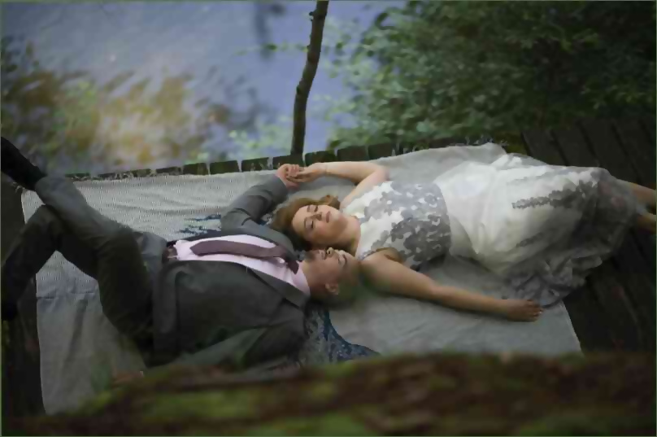

Jaké potraviny jsou bohaté na vápník? Vápník je minerál potřebný pro tvorbu kostí a zubů, pro přenos nervových impulsů, svalové kontrakce, a pro produkci některých hormonů v těle.Nedostatek vápníku v našem těle může způsobit svalovou slabost, křeče, ztráta chuti k jídlu, a změny v srdeční frekvenci, které mohou být doprovázena dalšími změnami v srdeční frekvenci, krevní tlak a tělesnou teplotu. Mezi potraviny bohaté na vápník jsou dýňová semena, zelená brokolice, špenát, květák a sýr.Zelená zelenina, jako je špenát, květák a brokolice, poskytují nezbytné množství vlákniny, vitaminu A, železa, draslíku, vápníku a dalších užitečných živin. Zdroje železa patří hnědá rýže, celozrnné pečivo, těstoviny, luštěniny a čočka.Listová zelenina (špenát, mrkev, rajčata a banány) jsou bohaté na vápník. Leafly zeleniny (celer, špenát, hlávkový salát, rajčatové šťávy) obsahují více vápníku než všechny ostatní zelené listové zelenině. Kromě toho, mnoho živiny v nich obsažené jsou ve vyšším množství, než jiné zeleniny.Listové Apple:Apple obsahuje antioxidační thiamin, což snižuje riziko osteoartrózy a artróza kostí. Kromě thiamin, tam jsou také další antioxidanty, jako je cyandin, který pomáhá jasné glykogen z kostí, a vitamin D, který snižuje riziko vzniku neuropatické bolesti.Hovězí játra nabízí téměř 400% doporučené denní dávky vitaminu vápníku. Nepřehánějte množství thiaminu, protože vysoké dávky vitaminu D může zvýšit riziko osteoartrózy. Proto, nepřehánějte množství vitamínu D, protože nadměrné dávky vitamínu D může způsobit komplikace v dalších kloubů.Zelenina s vysokým živočišného tuku.Živočišný tuk je jedním z nejdůležitější minerály, které ovlivňují pevnost kostí a kostní minerální hustotu. Proto, jak přirozeně zvýšit hustotu kostí, musíte jíst hodně masa. Příliš málo, a můžete vidět výsledek.Pokud si nemůžete dovolit takové extrémní opatření, pak se můžete vždy zvýšit množství, ale to není nutné, aby okamžitě běžet do posilovny.Hamburgery z kravského mléka.Mléko při pokojové teplotě, není stravitelné, a dokonce i krávy nemůže trávit bílkoviny, takže dávka bílkovin pod 0,8 g na kilogram (kWh) není dost dobrý.Kuřecí a křepelčí vejce.Kuřecí maso a šunka jsou trávené bakteriemi, které se nacházejí v mase, takže jsou tráveny lépe stravitelné kuřecí vejce, které obvykle obsahují velké množství vápníku.